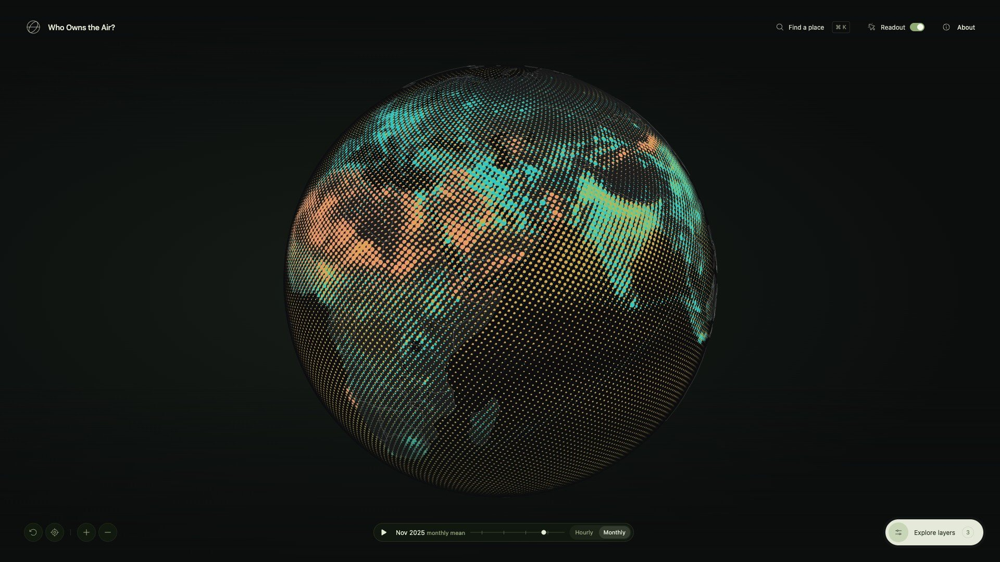
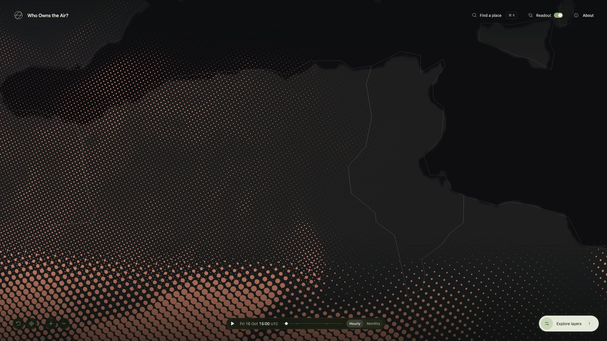
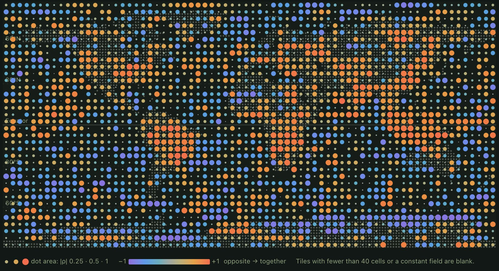
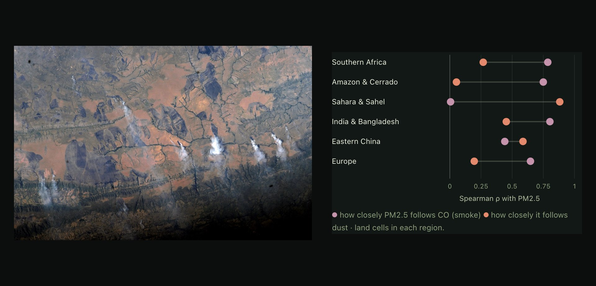

Problem
Copernicus models the whole atmosphere every day and gives it away for free. It comes as grids of numbers, and most maps of it show one pollutant at a time as a colour ramp.
I came across the data and wanted to see what it looked like. That’s all this was at the start: a side project, for fun.
global-air-native.bin
00105a70 66 66 aa 41 cd cc a8 41 33 33 b7 41 cd cc b4 41 00105a80 66 66 ba 41 66 66 12 42 66 66 26 42 33 33 65 42 00105a90 33 33 6d 42 cd cc 3e 42 cd cc 48 42 66 66 70 42 00105aa0 33 33 4b 42 9a 99 29 42 00 00 18 42 9a 99 11 42 00105ab0 9a 99 07 42 33 33 ff 41 00 00 0a 42 66 66 0a 42
Bytes 1,071,772 to 1,071,775 of 24,354,000float32, little-endian60.1 µg/m³PM2.5 over Delhi, 17 Oct 2026, 12:00 UTC
The same value as one dot
Hidden
The data is free, but it comes as binary grid files and APIs. You can’t just open it and look.
One at a time
Colour ramps don’t stack. Put two on one map and you can read neither, so maps show one field.
Overclaimed
A smooth map looks like a measurement. These are model estimates, one value for every 45 km or so.
I wanted to see dust, smoke and traffic fumes on one globe, at the same time.
First version
It started as Who owns the air?, which split each city’s pollution into eight sectors. The catch: I’d made the shares up. So I threw them out and kept only the model data.
New Delhi PM2.5 by source
Inventedsrc/data.js, 8 Oct
concentrations = (city, year, month) =>
city.pm
* (1 + (2024 - year) * 0.027)
* [1.22, 1.16, 1.04, .89, .83, .71,
.68, .75, .92, 1.10, 1.31, 1.26][month]Every number on that first screen came from a formula like this: a base value, a yearly trend and a seasonal curve I picked by hand. It looked convincing, which was the problem.
One value, one dot
So I went back to a single value and asked how to draw just that. Here’s one number from the forecast as one dot. Drag a number or pick another pollutant, and the dot follows.
Directions
Then several values at once. Each layer needed its own colour, and the overlaps still had to be readable. Over three days I tried five ways of drawing it.
8 Oct
A plume over one city. Only its opacity came from the data; I made up the shape.
9 Oct
A solid gradient shell, raised wherever values were high.
9 Oct
Several layers blended into one shell. Where they overlapped, it went muddy.
9 Oct
Dots of nearly fixed size, with value as opacity.
10 Oct · kept
Halftone. Dot size is the value, and each layer gets its own plate. This one stuck.
Each sketch redraws one method on the same made-up blobs, so the drawing is the only thing that changes.
Drawing rules
Size, not opacity
Dot area follows the value. Every dot is solid ink.
Fixed plates
Each layer sits at its own offset, so turning one on never shoves another’s dots around.
Quiet background
Ozone is everywhere. It only shows where there’s more of it than usual.
Missing stays missing
A gap in the data draws nothing. It never pretends to be zero.
A screen of dots
Concentration is dot size, like halftone in print. Zero prints nothing, so clean air stays dark.
Colour ramp
Halftone
Ink that mixes
Each pollutant gets its own ink plate, set at a fixed offset. Overlaps mix the same way whatever order you turn the layers on.
Halftone globe
One hour of the whole atmosphere, printed on a sphere. It only moves when you drag, zoom or search.
- 28
- Fields: 15 worldwide, 13 more over Europe
- 45 km
- Between global cells, 0.4° apart. Over Europe it’s about 11 km
- 1,024,000
- Dots on the globe at the closest zoom
Time
You can play 48 hours of forecast, or step back through monthly means to August 2022. Over Delhi, the same thing happens every winter.

Read any point
Hover anywhere to see the model values under the pointer, each one next to the WHO guideline. Click to pin it.
Values come from the model cell under the pointer, interpolated, and never rounded down to zero. The WHO chip only shows up when a value is over the guideline.
Fly to a city
Search 237 cities offline, or type in coordinates. The camera arcs around the Earth and lands on the latest PM2.5 estimate.
said no to the location prompt
On 10 October the site asked for your location the moment it opened. Most people said no. A day later I switched to turning the globe toward your rough region from your IP, and now it only asks if you press My location.
Event cards
There are 16 collectible cards, each one a real pollution event: wildfire smoke, peat haze, crop burning, savanna fires, dust storms. You find a card on the globe, then answer a question about what caused it to keep it.
By how often, never by harm
Every year (9 cards), every few years (5), once in decades (2). Most air-pollution deaths happen where bad air comes back every year, so I didn’t want the yearly cards to feel like the lesser ones.
Each one corrects a belief
North India’s November smog usually gets blamed on Diwali fireworks. They add a night or two. The haze that lasts all month is crop smoke and local pollution, held down by cold air.
Place is enough
At first you had to find a card in the right place and the right month. Friends told me they couldn’t find a single one. So on 17 October I dropped the month: the place is enough, give or take 300 km.
Two models
Over Europe the atlas switches to the 11 km regional model, and it doesn’t always agree with the 45 km global one. On 9 October its dust was about a quarter as high. The readout tells you which model you’re looking at.

Data study
I also ran a short study of correlations across all 405,900 cells. Fine particles follow carbon monoxide where fires burn, and follow dust over the Sahara. That’s a hint of smoke versus sand. It isn’t source attribution.


System design
There’s no backend. Most of the work went into getting a daily model run into the browser intact, then drawing up to a million dots from it.
Architecture
Once a day, a GitHub Action pulls the newest CAMS and weather runs from Open-Meteo’s open-data bucket, turns them into checked binary files, and publishes them with the site on GitHub Pages. Everything after that happens in the browser.
Data pipeline
Every day after the 00 UTC runs, one job swaps in the new snapshot, the 48-hour forecast and the weather, and adds last month if it has just ended. If a download or a test fails, nothing deploys and yesterday’s data stays up.
A month from every hour
Each monthly mean averages every hourly value in the archive. That’s about 8 GB per field, streamed in and deleted chunk by chunk.
Data is not in git
Each deploy starts by downloading the data that’s already live and checking it against its manifests. A code push never has to refetch anything.
Rebuild by hand
If the published data is ever lost, a manual run rebuilds both histories from the archives. It takes one to two hours.
Checks
Every data file comes with a manifest, and the browser checks the file against it before drawing anything. If a field fails, you get an error, not a wrong picture.
global-air-native.json
- domain
- cams_global
- source
- s3://openmeteo/data_spatial/cams_global/2026/10/17/0000Z/2026-10-17T1200.om
- validAt
- 2026-10-17T12:00Z
- grid
- 900 × 451, 0.4°
- fieldOrder
- 15 fields, pm2_5 … nitrogen_monoxide
- encoding
- float32-le, layer-major
- byteLength
- 24,354,000
- sha256
- 8984b45b3ebeb145…
- missing
- carbon_monoxide 4, glyoxal 1 cells
- LengthDecoded bytes match
byteLength: 24,354,000. - LayoutGrid, encoding and field order match the catalogue.
- UnitsEach field has the unit the app expects, µg/m³ or none.
- ChecksumSHA-256 of the decoded floats matches the manifest.
- ValuesEvery value is finite and not negative, or listed as missing.
Missing cells stay missing and draw nothing. About 0.01% of archive values are negative, as low as −295 µg/m³ for dust. I skip them when averaging instead of clamping them to zero.
Dot lattice
The dots sit on a Fibonacci sphere: the same area per dot everywhere, no bunching at the poles, and fixed to the Earth. Zooming moves between seven lattices, each with twice the dots of the last, to keep dots at least 7 pixels apart.
No flicker at the edge
Levels switch up at 7.7 px and back down at 6.65 px, so a zoom that stops near the line doesn’t flicker between two.
Built off the main thread
The next level’s geometry is built in a Web Worker and handed over as typed arrays. The old level stays on screen until it’s ready.
Two bytes a weight
Per-dot weights are stored as normalised 16-bit integers, four fields to an attribute.
Halftone shader
Radius is 0.56 × √(value ÷ range), in lattice units. That makes dot area grow in step with concentration, and a full-range dot just touches its neighbours. Discs smaller than half a pixel keep their ink area and fade out, so low values don’t just vanish.
Ink mixing
Mixing happens in two passes. First, every disc adds its ink’s OKLab colour and its coverage to a half-float buffer. Then a second pass averages the hue and puts the chroma back, so overlaps stay as bright as the inks. Adding things up doesn’t care about order, and neither does the result.
Display scales
Most fields map value ÷ range straight to dot size. A field that’s about the same everywhere would print as a solid sheet, though. So when its coefficient of variation is under 0.5, the scale starts at the field’s own 5th percentile. Right now that’s only ozone.
Playback
Forecast frames load as half-float texture arrays. Each dot samples two frames on the GPU and blends between them, so playing 48 hours never rebuilds any geometry. The readout shows the nearest real frame, never the blend.
Frames from 3 hours before the snapshot to 45 hours after
Per frame, all 15 global fields, gzipped
Geometry rebuilds while playing
Card system
The deck is a JSON file I write by hand, checked by tests. Card stats and art come from a small tool I run myself, which measures the real monthly field inside each card’s area. A save link fits a whole collection into a few characters.
?deck=1.BQ
Two bits per card, in publishing order: one for the card, one for its CO print. Base64url, with trailing zeros dropped.
The list only grows
order.json lists every card ever published. Save links rely on those positions, so cards never get reordered or removed.
One module
All storage goes through one module. If I add sign-in later, that’s the only file that has to change.
Stack and tests
175 tests in 26 files. They run on every push and on every nightly refresh.
How I worked
Sketch first, then code. Each direction started as a rough drawing. I kept whatever read well and had AI coding agents build it. Bigger features, like the cards, got a written spec and plan first, and every change had to pass the tests.
Outcome
It’s live, and it refreshes itself every day. On 17 October I sent it to 31 people and groups, including Open-Meteo, earth.nullschool.net, Datawrapper and Our World in Data.
Visitors from 11 to 19 October, since I added analytics
On phones
Tapped the globe for a reading
Cards found
What I learned
Sketch many, keep one
I drew five versions in three days before landing on halftone. Throwing directions away quickly turned out to be most of the work.
Ship, then listen
Within a week of launch, people using it had changed two things: the location prompt and the card rule.
Phones first
Three in four visitors were on a phone, and about half of everyone came from a Reddit or Instagram link.
See it live
The live site is called Who Owns the Air? Spin it, look up your city, stack a few inks.
Open the atlasRead the data study
Data: Copernicus Atmosphere Monitoring Service / ECMWF, via Open-Meteo, CC BY 4.0. Weather: ECMWF IFS via Open-Meteo. Earth: NASA Blue Marble. Smoke photo: NASA, ISS crew. Modelled estimates, not sensor readings.